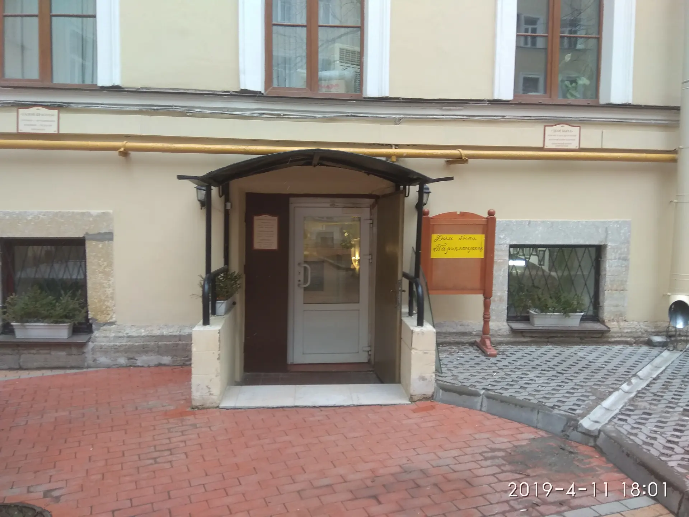
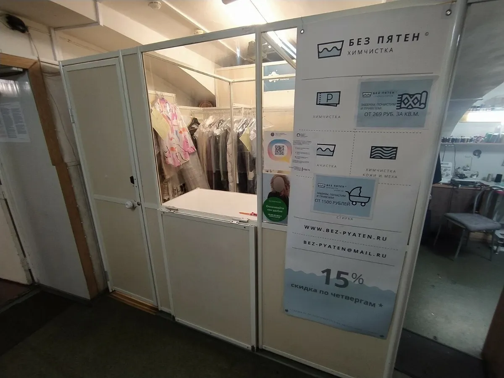
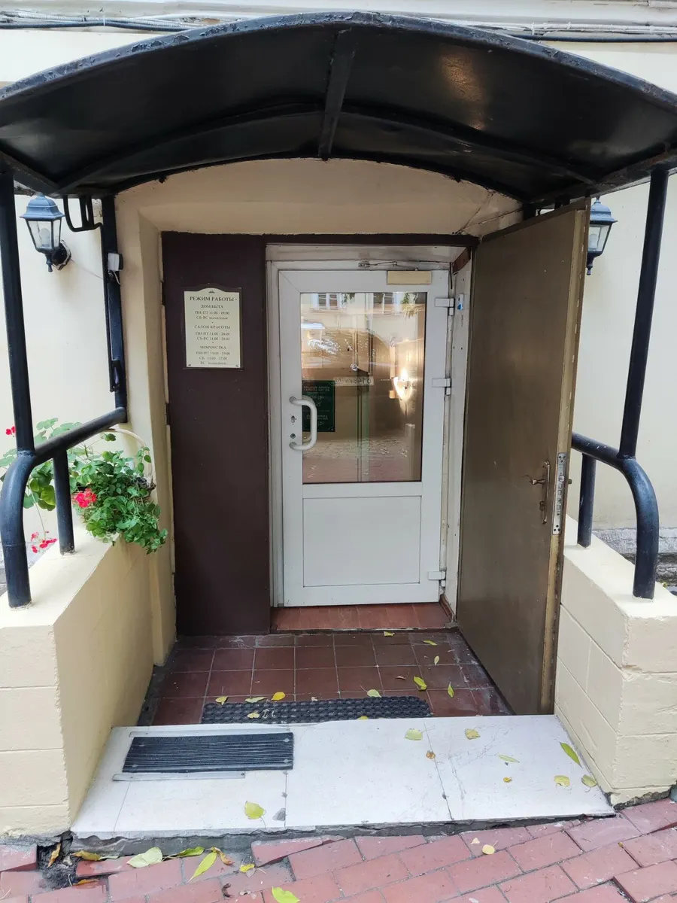
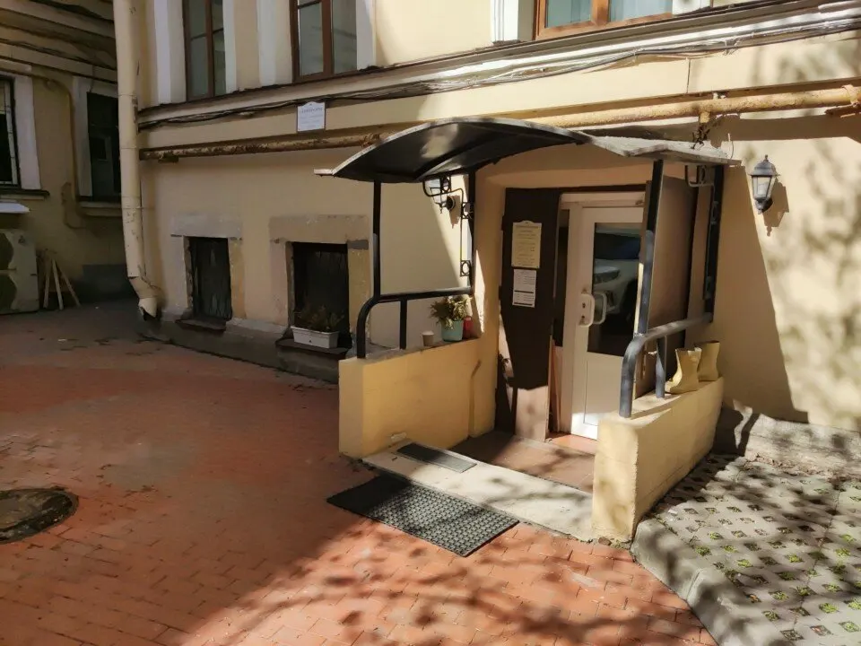

Химчистка · Санкт-Петербург
Химчистка одежды, ковров и текстиля в Санкт-Петербурге
Пальто, пуховики, перины, чехлы, ковры, пледы – чистим вещи, которые нельзя просто постирать. Цена по каждой вещи – на сайте.
- Цена по каждой вещи – из прайса
- Ковры, пледы, перины, чехлы
- Рейтинг 4,7 на Яндекс.Картах

Цены на чистку
Выборка из прайса на карточке в Яндекс Картах. Полный список – одежда, мех, трикотаж, ковры, домашний текстиль – у менеджера.
Одежда
- Пуховик средний (до 90 см)1 900 ₽ за шт.
- Демисезонное пальто (до 90 см)1 900 ₽ за шт.
- Зимнее пальто (до 90 см)2 100 ₽ за шт.
- Платье, сарафан (до колена)1 000 ₽ за шт.
- Джинсы750 ₽ за шт.
Дом и текстиль
- Перина евро-размераразмер клетки не более 20х20 см2 400 ₽ за шт.
- Чехол на мягкую мебель 2-спального размера1 800 ₽ за шт.
- Синтепоновая подушка600 ₽ за шт.
- Ковёр, стандартная чисткавискозный; минимальная стоимость обработки одного ковра – 490 ₽490 ₽ за м²
- Лежанка для собак (до 70х70 см)600 ₽ за шт.
Цены на карточке давно не обновлялись – актуальную сумму называют при приёме вещей.
Как сдать вещи
- 01
Выбор вещей
Смотрите прайс или пишите, что нужно почистить: одежда, ковёр, плед, перина.
- 02
Приём
Приносите вещи на набережную Мойки, 42 – сотрудники помогут выбрать вид чистки.
- 03
Чистка
Чистят и крупногабаритные вещи – так пишут клиенты в отзывах.
- 04
Получение
Забираете вещи в рабочие часы: Пн–Пт 11–19, Сб 11–17.



Что пишут клиенты
Всё в одном месте
Отзыв: ковёр, шерстяное пальто и плед на диван сдали разом.
Быстро и качественно
Отзывы: сроки короткие, качество всегда отличное.
Помогут выбрать чистку
Отзыв: вежливые сотрудники подсказывают лучший вид чистки.
Отзывы с Яндекс.Карт
«Обожаю эту химчистку за универсальность! Сдала сразу три вещи: ковер в машину, шерстяное пальто и плед на диван.»
Ксения Климовских · 14 марта
«Хорошее качество, быстро. Чистят даже крупногабаритные вещи. Вежливые сотрудники всегда помогут выбрать лучший вид чистки для Ваших вещей»
Инкогнито 8284 · 25 апреля
«Отличное место! Много лет сдаю сюда вещи, никогда не было проблем. Сроки выполнения работы — короткие, качество всегда отличное. Рекомендую»
Табита Тикарам · 25 апреля
Отзывы с карточки на Яндекс.Картах, без правок.
Частые вопросы
Что чистите?
Верхнюю одежду, мех, трикотаж, ковры, домашний текстиль, подушки из пера, аксессуары, свадебную и церковную одежду; стираете постельное бельё.
Берёте крупные вещи?
Да, в отзыве клиент пишет, что чистят даже крупногабаритные вещи.
Как узнать цену?
Выберите вещь в калькуляторе или в прайсе. Для вещей, которых в выборке нет, цену называют при приёме.
Когда работаете?
Пн–Пт 11:00–19:00, Сб 11:00–17:00, воскресенье – выходной.
Напишите, что почистить – назовём цену
- Адрес
- набережная реки Мойки, 42, цокольный этаж, Санкт-Петербург
- Часы
- Пн–Пт 11:00–19:00, Сб 11:00–17:00, Вс выходной
- Телефон
- +7 (812) 312-32-33